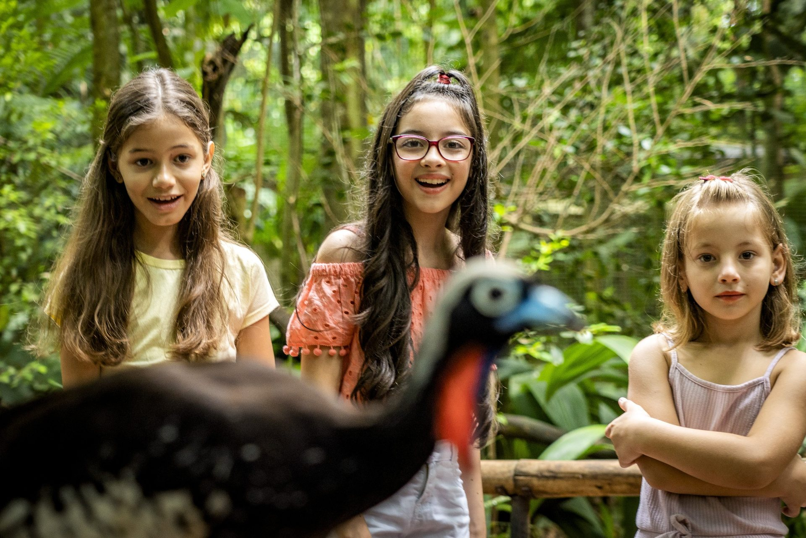

História
A associação de zoológicos e aquários mais antiga da América Latina

AZAB É A ASSOCIAÇÃO DE ZOOLÓGICOS E AQUÁRIOS MAIS ANTIGA DA AMÉRICA LATINA
Uma história de quase cinco décadas dedicada à integração, à capacitação e à conservação da biodiversidade brasileira.
Fundada em 23 de setembro de 1977 sob o nome de Sociedade de Zoológicos do Brasil (SZB), em uma reunião onde estavam presentes os técnicos e diretores Ladislau A. Deutsch, Milton S. Carollo, Luiz Almeida Marins Filho, Alter Rizzoli, José dos Santos Machado Filho, Raimundo David Monteiro Lima, Carmem Lucia da Silveira, Wenceslau Correa Lacerda, Afonso de Moraes Rego, Lázaro Ronaldo R. Puglia, Edmar José Kiehl, Antônio Caixeta, Marilene de Fátima Autuori, Maria Madalena Garcia, Dorival Chemin, Elmo Anastácio Silva, Miriam Costa de Andrade, Marilene de Fátima Lacerda, José Assis, João Batista, Ruy Nicaretta, Pelayo Magraner, Antônio Luis de Moraes e Carlos Alberto Pereira André.
Na época esses técnico e diretores representavam 12 instituições zoológicas, sendo elas: Fundação Parque Zoológico de São Paulo, Parque Quinzinho de Barros, Parque Educativo de Goiânia, Parque Mourão de Leme, Parque Ecológico de São Carlos, Jardim Zoológico do Rio de Janeiro, Jardim Zoológico de Belo Horizonte, Jardim Zoológico de Brasília, Zoológico de Aparecida, Parque de Piracicaba, Fundação Parque Zoológico de Araçatuba e Parque Zoológico de Limeira.
Em sua 41ª Assembleia Geral Ordinária, no ano de 2018, passou a se chamar Associação de Zoológicos e Aquários do Brasil (AZAB), incorporando ao seu nome os aquários, instituições com importante papel na conservação da biodiversidade.
Focados na integração e capacitação, a AZAB promove o desenvolvimento de nossos membros, inserindo-os na comunidade zoológica internacional e consolidando o Brasil como referência em conservação ex situ e educação para conservação. Por meio de campanhas educacionais, apoio técnico e eventos, a Associação visa fortalecer as instituições associadas.
Mantemos parcerias estratégicas com associações internacionais, como: Associação Latino-Americana de Parques Zoológicos e Aquários (ALPZA); Associação Americana de Zoológicos e Aquários (AZA); Associação Europeia de Zoológicos e Aquários (EAZA); Associação Mundial de Zoológicos e Aquários (WAZA); Zoo Conservation and Outreach Group (ZCOG) e Species 360.
A Associação também apoia campanhas de impacto, como Semana Ciclo Siete, Dia Mundial da Vida Selvagem e Biodiversidade Somos Nós, e desenvolve projetos anuais focados em espécies brasileiras, como anta, lobo-guará, papagaios, mico-leão-dourado, tamanduás, cavalos-marinhos e jacarés.
Hoje a AZAB conta com quase 50 instituições associadas e muitos técnicos, professores e pessoas interessadas no setor e que dedicam seu tempo e conhecimento para guiar os zoológicos e aquários a atingirem os mais altos padrões de manejo e bem-estar, visando a conservação da biodiversidade do Brasil e do mundo.
Faça parte dessa história
Some-se à rede de instituições e profissionais que constroem a conservação no Brasil.